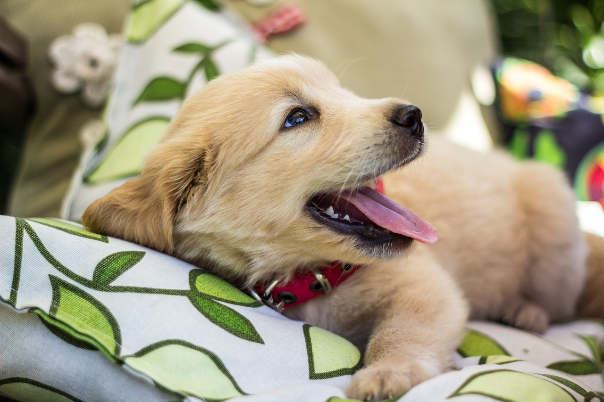

고양이
식육목(食肉目) 고양이과의 포유류에 속하며, 애완용의 고양이 또는 고양이과의 총칭.
한자로는 묘(猫)라 하고, 수고양이를 낭묘(郎猫), 암고양이를 여묘(女猫), 얼룩고양이를 표화묘(豹花猫), 들고양이를 야묘(野猫)로 부르기도 한다. 현재 집에서 기르고 있는 모든 애완용 고양이는 아프리카·남유럽·인도에 걸쳐 분포하는 리비아고양이(Felis silvestris lybica)를 사육 순화시킨 것으로, 전세계에서 2억 마리가 넘게 사육되는 것으로 알려져 있다. 약 5,000년 전 아프리카 북부 리비아산(産)의 야생고양이가 고대 이집트인에 의해 길들여져서 점차 세계 각지에 퍼졌다고 한다. 이것은 고대 이집트의 벽화 ·조각, 고양이의 미라 등으로 미루어 명확하지만, 그것이 현재 사육되는 모든 고양이의 조상인지는 의문이다.

개
바다